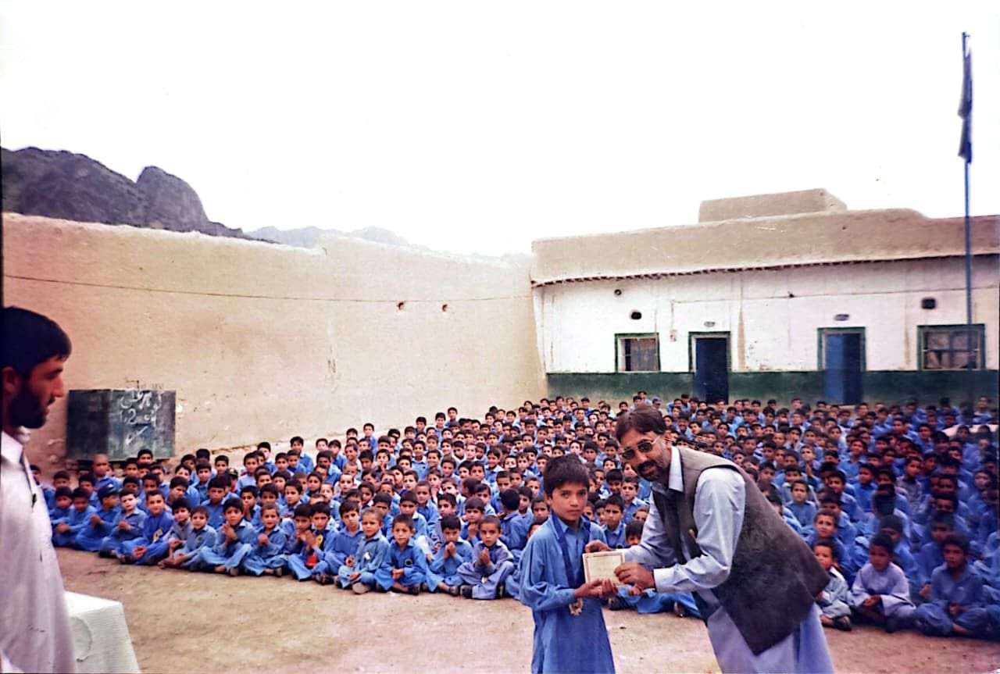
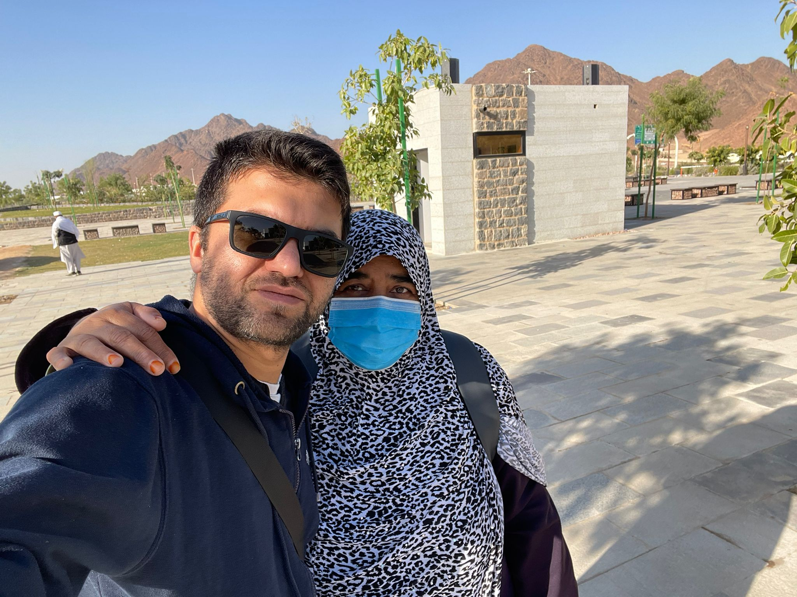

This is not my CV. That lives elsewhere on this site. This is the story behind it — the unedited version, written for myself as much as for anyone who finds it.
Torkham, circa 2000
Before Landi Kotal, before Peshawar, before any of it — there was Torkham.
I was about seven years old. My mother was a health worker, which meant that during the years when the war on terror began reshaping the northwest frontier, she was among those who showed up. I remember the hospital. I remember wounded people being brought in — taken care of by staff and NGO workers with a quiet, exhausted diligence that I did not have the words for then.
I have a blurred memory of waking up at night to the vibrations from bombing happening across the border. It was distant but it was felt. And every time I woke, my mother would be there, holding me, and I would fall back to sleep.
Both sides of that border shared the same faith, the same God, the same prayers. On one side, people were being killed. On this side, they were being healed.
I did not ask anyone about this. I was too young to know how. But something lodged itself in me that has never fully dislodged — a question about the distance between what a religion says it is and what is done in its name. I would not find language for it for another twenty years.
The Pentium 1, and What It Cost
We moved through several places in those early years — Charsadda, where I spent my first months after birth, Parachinar (I remember only blurred visions of snow), government quarters, rented rooms. My father and mother were both government employees. We were a family that moved where work required.
It was in Landi Kotal, in grade two, that a photograph was taken that I still keep.

The boy in that photograph looks proud. He does not yet know that the following year he will score 688 out of 700 in his grade three final exam — and lose a Pentium 1 computer by coming runner up.
I know what that felt like. Working that hard. Falling that short. It was the first time I understood, in my body rather than my head, what effort and loss feel like together.
My mother's response was prayer and patience. She had been telling me about resilience since before I had a word for it. My father's response was practical and generous in the way fathers sometimes are — the year we finally settled in Peshawar, he bought my brother and me a computer.
That machine changed my life. It also caught every virus known to computing. Which is where Rashid came in.
The People Who Stayed
Rashid is my sister-in-law's brother. But that description does not do it justice. He is older than me, a software engineer, and for years he was the person I called when our computer had once again contracted some catastrophic digital illness. He rescued that machine more times than I can count. He was the first person who showed me that someone with real technical knowledge could also be patient enough to explain things to a younger kid who just wanted to play games.
He once told me: write, and be a voice for your community. I have been thinking about what community means ever since.
Then there is Zeeshan. My brother — only three years older, but the distance between us in terms of what he has given me cannot be measured in years. He was the one who made sure I could keep going when the pocket money ran out and I was too proud or too young to know how to ask. I never hesitated to call him. He never made me feel the weight of it. His quiet sacrifices — and they were real sacrifices — made the education possible in ways I am still understanding. After my parents, it was him.
In Peshawar, at St. Francis' High School — where I spent grades three through ten — I met Danish Khattak in fifth grade. We have been friends since that first meeting. Last year I travelled to Europe for a conference in Vienna, and made a point of going to Germany to meet him. He is flying high day by day. He is my oldest buddy, my secret keeper, and my relationship advisor — a role he has held with mixed results.
The thing I will always owe Danish most is a single conversation. When I had to choose between the Gulf — comfortable, close to home, familiar — and Canada — unknown, far, uncertain — he told me to go for the explorer in myself. Go and see the world. That is the kind of friend who does not just keep your secrets. He shapes your life.
We were a trio growing up, the three of us — Danish, myself, and a third who is now wonderfully busy with her family. We exchange messages on Eid, maybe twice a year. That is enough. Some friendships do not need frequency to survive.
St. Francis gave me more than friendships. Teachers like Francis Sales Fernando and Riffat gave me a sense of what a human being is capable of when they decide to will something into existence. In ninth grade, across the school's annual athletics competitions — high jump, long jump, sprints — I earned the champion athlete title. I made the mistakes teenagers make. I would not trade any of it.
Islamia College, Mathematics, and a Night I Will Not Forget
Grades eleven and twelve at Islamia College Peshawar. Science stream. Mathematics became the subject that genuinely provoked thought — not because I was exceptional at it but because Zafar Iqbal made it feel alive. May he rest in peace. He had a quality that the best teachers share: he made you feel that the problem in front of you was worth your full attention.
I never liked biology. I think it was partly the competitiveness of pre-medical culture in Pakistan, partly that I was not good at drawing body structures, and mostly that I had already found my joy — working through mathematics for hours with background music. Biology felt like memorization. Mathematics felt like thinking.
But there is something else I carry from those years that has nothing to do with mathematics.
Shah Fahad Shaheed was my friend. My sister-in-law's cousin, so family too — but before the family connection, a companion from St. Francis, where he had been in the junior section while I was senior. We used to come back from school together. He was the kind of person you do not have to explain yourself to — a crime partner in the best sense, someone who understood the joke before you finished telling it. I remember going with him to his parents' meeting with teachers, carrying the promise he had made that he would study harder for biology before the final board exams.
He was not there for those board exams.
On 16 December 2014, terrorists attacked Army Public School in Peshawar. Our students' federation was called that night for blood donation. I went. I remember the hospital — the parents standing at the notice board, reading lists. Looking for names. Some finding what they feared. Some still hoping.
I came home and found out that Shah Fahad had been taken to another hospital. He did not survive.
That night broke something in me that took years to understand. What I felt was not anger at my religion — Islam did not do this. The Quran did not do this. People did this, people who had taken a faith whose very name means peace and turned it into justification for killing children. But I was young, and in grief, and I could not yet make that distinction cleanly. What I felt was a suffocating confusion — how can a community defined by this religion produce this? I did not have the answer then. What I had was a decision, quiet and firm: I wanted to leave. To go somewhere far enough that I could breathe, think, and figure out what I actually believed rather than what I had inherited.
I applied for the YES exchange scholarship to the United States in tenth grade. I did not get through. I applied twice during my bachelors for the UGRAD exchange program. I did not get through either. North America had always been the dream. That night in the hospital made the dream feel like a necessity.
The path there was longer than I expected. But it opened, eventually, in a way I could not have planned.
COMSATS and the Direction That Found Me
Bachelors in Computer Engineering at COMSATS University, Abbottabad. The direction that had been forming since that first computer finally clarified here. Shoaib Azmat's courses in digital image processing and AI pointed at something I had been circling without knowing it — the intersection of machines and human perception. He once wrote in a reference letter that he was confident I would become a good researcher. I have held that sentence carefully ever since.
Abbottabad was also my first time in a hostel. My first time truly away from home.
My mother came to help me set up my room. She arranged everything — made it as much like home as a hostel room can be. I was excited in the way you are when you are young and a new chapter is beginning, when the future feels like it is leaning toward you rather than away.
Then she hugged me before leaving.
There was a moment in that hug where everything shifted. She broke down completely — and in that moment I understood, in a way I had not until then, the weight of what she had been quietly carrying all those years. All the moving. All the government quarters. All the prayers and the stories and the patience of raising children she loved more than I had yet grasped.
I walked her out. I came back to the room. It was the same room it had been ten minutes earlier and it felt entirely different.
In the ten years of hostel life that followed — Abbottabad, then Abu Dhabi, then Ottawa — I have missed her every single day.
I hope to see her this summer.
MBZUAI — Abu Dhabi and a Dream That Came True
My mother is from a Syed family with deep roots in Sufi tradition. She grew up with stories of mystics and the interior life they sought. She was never harsh about religion. She gave me the habit of prayer firmly but lovingly. She was, as Pashtun mothers sometimes are, both the disciplinarian and the crime partner depending on the situation. She called me Lorayy — a Pashto term of endearment meaning daughter — because I was the youngest and the naughtiest and she dealt with me through a particular kind of spoiling love that I did not deserve and needed completely.
It was on the Peshawar Motorway, sometime before the MBZUAI results, that she told me about the dream. She used to make me talk while I drove so I would not fall asleep. She said:
Adnan, have belief in Allah. The scholarship you are trying for — it will come. But after some time. I have seen a dream. Your father and I are crying — out of happiness, for you. And I have a small boy in my hands, about six or seven months old. Your sister-in-law is expecting. You will get your best shot when that baby is six or seven months old.
I nodded. I was amazed by how certain she sounded. At that point in my life, I understood dreams as something science had not yet fully explained — nothing more, nothing less. I did not know what to do with her certainty except respect it.
My nephew Zaviyan was born. He reached six months. The scholarship to Mohamed Bin Zayed University of Artificial Intelligence in Abu Dhabi arrived. I landed in UAE during Covid, quarantined for fifteen days, alone in a new country for the first time in my life.
I thought about my mother's words every day of those fifteen days.
At MBZUAI, Mohamed Yaqub was the first to sit with me seriously and show me what research actually looks like from the inside — the questions, the method, the patience. He supervised me for a semester and gave me the foundation. Muhammad Haris Khan, my thesis supervisor, did the polishing. I believe it is because of him that the confidence Shoaib Azmat expressed in that reference letter was not misplaced.
I also met people at MBZUAI who inspired me in ways I am still discovering — Uzair, Arslan, Asif, Umar, Hamza, Taimoor, Mai, Umaima, Ariana, among many others. I will always keep them in my well wishes.
What AI Did to My Faith
Studying AI at the graduate level does something unexpected to you. It makes the human mind feel more extraordinary, not less.
If machines — built from mathematics, data, and electricity — can achieve what they achieve, what does that say about the mind that conceived them? What is the distance between the most sophisticated model ever trained and a seven-year-old child who wakes up to the sound of distant bombing and carries a question quietly for twenty years?
I do not think that distance is small. I think it is the most important distance there is.
Canada, 2023 — A New Lens
The decision to come to Canada for a PhD was quietly made years earlier — by a teenager who took a three-day trip to Kashmir in ninth grade with three school friends, the youngest group in the entire crew. That boy wanted to see the world. He still does.
Now in my third year of PhD in Computer Science at Carleton University — working on machine learning, computer vision, and AI for accessibility and healthcare under the supervision of Majid Komeili, from whom I am always learning something new and to whom I will always be indebted for his patience — Canada gave me something I did not expect alongside the research: perspective.
I encountered well-read, thoughtful people who identified as atheists or agnostics. I listened to them genuinely, not defensively. What struck me most was that their questions were not shallow. They asked why there is suffering if God is real. They asked why believers are so often at the centre of the world's conflicts. They asked why religion, in so many places, seems to produce division rather than peace.
These were honest questions. And sitting with them, I began to see something clearly: many of them had not turned away from God so much as they had turned away from a particular image of God — one shaped by religion wielded as political power, as collective coercion, as a tool for control rather than a path for the individual soul. When faith is performed at the level of states and movements and ideological force, it tends to produce exactly the suffering they were pointing at. When it is lived at the level of the individual conscience — quietly, personally, accountably — it produces something else entirely.
That observation did not shake my faith. It deepened my need to understand it more precisely.
It was through that searching that I found the work of a scholar whose decades of research into the Quran's structure — its nazm, its internal coherence, the philosophy beneath the law — gave me a framework I had not had before. The Farahi school of thought, for those who want to explore it, is where that research lives. Reading the Quran through this lens was, for me, like being handed a key to a room I had been standing outside for twenty years.
A response came back to me once, through indirect channels, from a religious teacher who had heard some of these ideas — that I had gone astray. I sat with that for a long time. And then I went deeper into the study. Not out of defiance, but because a question that produces that kind of reaction is usually one worth pursuing more carefully, not less.
Canada — The Chapter Still Being Written
In January 2024, I travelled to Haram with my mother for pilgrimage. Standing there with her — the person whose prayers have carried me through every chapter of this life — was one of those moments that does not fit inside language.

There is also a friend I will not name — someone whose questions pushed me to study both evolution and my own faith more seriously than I had before. I pray our conversations have been as useful to her as they have been to me.
Muaz was there when I fell from a scooter and was lying there feeling genuinely helpless. He was the shoulder. Sometimes that is everything. Junaid, Salman, and Raahim gave me courage when I felt weak. They know what that means.
This chapter is not finished. These people are still in it.
What My Mother Gave Me, and What the Quran's Architecture Clarified
My mother gave me faith through practice — prayer, stories of mystics, the certainty of her words on a motorway. A scholar's decades of research into the Quran's structure — its nazm, its internal coherence, the philosophy beneath the law — gave me faith through reason. The Farahi school of thought, for those who want to explore it, is where that research lives.
These two things are not in conflict. They are the same destination reached by different roads.
My mother gave me the habit of returning to God. The Quran's own architecture gave me the understanding of why that return makes sense. Together they gave me something I had not had before — a faith that does not need to avoid the question, because it was built by taking the question seriously.
I believe, as a student of both science and Islam, that the universe is not a series of random accidents. I believe it is a deeply structured system — one that the human intellect was made to decode, slowly, imperfectly, and with gratitude. The same coherence I find in a well-designed algorithm, in a proof that resolves cleanly, in a model that generalises beyond its training data — I find it in the text, in the argument, in the framework. That coherence did not arrive by chance.
Why I Write
Rashid told me to write. To be a voice for my community.
The largest community I belong to is the human race. The questions I carry — about borders and violence, about faith and reason, about what we owe each other and what we owe God — are not niche questions. They are the shared interior of being alive.
This page, and the blog that accompanies it, is where I think out loud. I am a student. I do not have all the answers. I have learned that asking honestly is already most of the journey.
If you want to discuss any of this — agree, disagree, push back, share your own story — I welcome it. That is the only way any of us get further.
Ottawa, 2026
For everyone who is still asking.